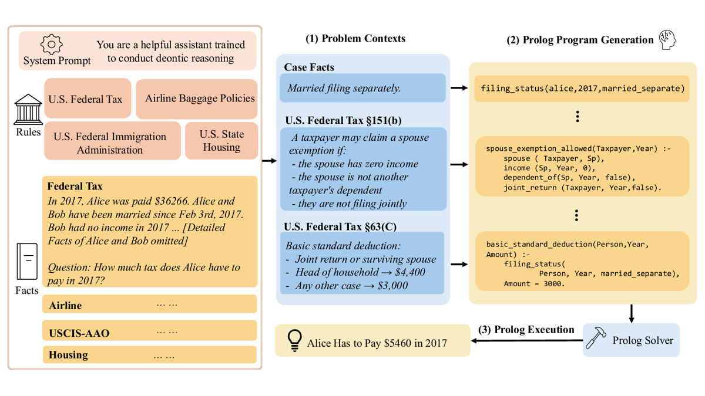
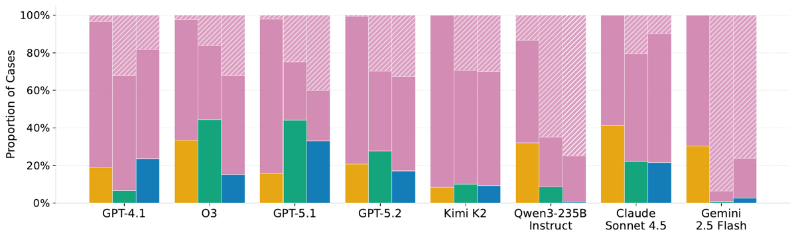
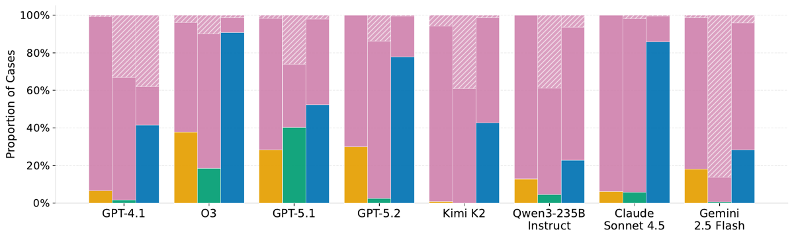

TL;DR — benchmark de 6 232 tâches de raisonnement déontique (appliquer des règles écrites à des faits) sur 4 domaines réglementaires US, avec un vérifieur programmatique : le modèle doit écrire un programme Prolog qui, exécuté par SWI-Prolog, imprime la réponse ; les auteurs entraînent ensuite Qwen2.5-32B en SFT → DPO → Dr.GRPO et concluent que le RL n'y arrive pas.
Claim principal, formulé précisément : 1. (benchmark) Sur les hard subsets, les meilleurs modèles frontier plafonnent à 44,4 % d'accuracy sur SARA Numeric et 46,6 de macro-F1 sur Housing [Abstract ; Tab. 2] — voir §7.0, les deux chiffres sont contredits par leurs propres tableaux. 2. (entraînement) SFT + DPO + Dr.GRPO améliorent le modèle de base sur les tâches binaires (USCIS-AAO few-shot 10,3 → 46,4 macro-F1) mais pas sur le calcul numérique (SARA Numeric reste < 10 quelle que soit la méthode) [§4.2, Tab. 3]. 3. (diagnostic) Les erreurs sont dépendantes du domaine : sélection de règle sur Housing (96,8 % des erreurs) et USCIS (77,3 % en zero-shot), extraction de faits sur SARA, arithmétique sur Airline [Tab. 4].
⚠️ Le résultat le plus utile pour nous est un résultat négatif : un env à vérifieur exact, sur le domaine le plus proche du droit du corpus, ne se laisse pas optimiser par GRPO. La section 4 montre pourquoi — et la cause la plus probable est un défaut de conception du harness, pas une propriété du domaine.
Aucune tâche n'est écrite par les auteurs. Trois domaines sont repris de datasets existants, un est miné :
- SARA (fiscal fédéral US) : repris de Holzenberger & Van Durme 2023 [§2.2]. Deux types : SARA Numeric (calculer l'impôt dû) et SARA Binary (Entailment / Contradiction sur une affirmation statutaire).
- Airline (frais de bagages American Airlines) : sous-ensemble de RuleArena [§2.2, Zhou et al. 2025].
- Housing (droit du logement/expulsion des États US) : premier split rc_questions de Zheng et al. 2025, soit 6 853 paires QA annotées avec les statutes supportantes [§2.2].
- USCIS-AAO (nouveau) : miné depuis les non-precedent decisions publiques de l'Administrative Appeals Office [§2.3].
⚠️ Le papier ne dit pas pourquoi Housing passe de 6 853 à 5 314 instances (1 539 supprimées, 22,5 %). L'explication la plus plausible est le filtrage par le pipeline Prolog (§ ci-dessous), mais c'est non précisé.
<statutes, case text, question, gold label> [§2.1].D_t = E_t(F, R_t), restreindre la fenêtre isole la capacité à modéliser E_t sous un régime de règles R_t approximativement stable [App. D.1]. ⚠️ Raisonnement explicite sur la dérive des sources — rare et directement pertinent pour nous ;
- extraction des faits par GPT-5-mini puis révision humaine, car la section Analysis mélange faits et application du droit et fuite le résultat. Prompt recopié en App. A (voir §3 ci-dessous) ;
- mapping des labels : remanded est classé Accepted [§2.3] ;
- échantillonnage stratifié par label × année → 242 cas, 121/121 équilibrés (la source est à 20,1 % Accepted seulement) [§2.3, Tab. 8].⚠️ Biais de sélection structurel, non discuté par les auteurs. Le benchmark ne contient que les instances pour lesquelles o3 a su produire, en ≤ 2 essais, un programme Prolog qui tombe sur le bon label. C'est une définition circulaire de « tâche résoluble », et elle borne par construction ce qu'un env d'entraînement construit ainsi peut enseigner.
⚠️ Et surtout : le critère d'acceptation est « la sortie == le gold label ». Sur 3 domaines sur 5 le label est binaire (SARA Binary, Housing yes/no, USCIS Accepted/Dismissed) — un programme trivialement vrai ou une constante en dur passe le filtre une fois sur deux. Le contrôle humain est décrit comme portant sur un échantillon. Voir §5 : les auteurs l'ont confirmé eux-mêmes après publication.
| Domaine | Split | #Tâches | Tokens statute (moy.) | Tokens case | Tokens Prolog |
|---|---|---|---|---|---|
| SARA Numeric | Whole | 100 | 6 118 | 83 | 945 |
| SARA Numeric | Hard | 35 | 6 118 | 89 | 1 236 |
| SARA Binary | Whole | 276 | 6 118 | 47 | 361 |
| SARA Binary | Hard | 30 | 6 118 | 52 | 453 |
| Airline | Whole | 300 | 3 626 | 187 | 880 |
| Airline | Hard | 80 | 3 626 | 197 | 1 034 |
| Housing | Whole | 5 314 | 2 219 | 23 | 1 350 |
| Housing | Hard | 78 | 588 | 23 | 680 |
| USCIS-AAO | Whole | 242 | 436 | 396 | 884 |
| USCIS-AAO | Hard | 28 | 369 | 408 | 956 |
Total = 6 232 (somme vérifiée). Hard sets = 251 instances au total.
⚠️ Housing représente 85,3 % du volume (5 314/6 232). Le « benchmark de 6 232 tâches » est en pratique un dataset Housing avec quatre petits satellites (100 / 276 / 300 / 242). Toute statistique agrégée sur le whole est une statistique sur Housing.
⚠️ Le hard set Housing est l'anomalie : statute 2 219 → 588 tokens et Prolog 1 350 → 680 en passant de whole à hard. Les auteurs écrivent « les hard subsets demandent généralement un raisonnement plus complexe, donc des Prolog plus longs » et notent honnêtement « dans 4 domaines sur 5 » [§2.6] — mais ne commentent pas le cas Housing. Mon interprétation : sur Housing, « difficile » sélectionne les instances où l'extrait de statute fourni est trop court pour trancher, pas celles où le raisonnement est profond. Cohérent avec Tab. 4 (96,8 % d'erreurs « Wrong Rule » sur Housing) et avec l'exemple d'App. E.5 (question « Are eviction cases first heard in municipal court? », label « Yes », alors que les deux statutes cités donnent compétence au district court et au municipal court, ce dernier n'étant « proper court » que « in districts where the district court is not operative »). Le label est discutable.
Aucun curriculum au sens propre. Un seul choix apparenté [§2.5, App. B.2] : les instances validées comme dures ne vont pas toutes dans le hard set d'éval ; une partie est remise dans le pool d'entraînement, explicitement « pour que l'entraînement contienne aussi des exemples difficiles plutôt que d'être dominé par les faciles ». Proportion du split : non précisé. Ordre, mélange entre domaines, rééchantillonnage en cours d'entraînement : non précisé.
<Statute + Contexts, Prolog>, cible = le Prolog de référence de DeonticBench. Volume non précisé. Rôle : apprendre le format et la syntaxe Prolog (cold start).chosen = le Prolog de référence ; rejected = généré par le modèle de base off-the-shelf, suivant la delta learning hypothesis (Geng et al. 2025). Volume non précisé. ⚠️ Aucune vérification que le rejected est effectivement moins bon (il peut être correct) ; la préférence encode « style de la référence » autant que « correction ».« Human experts » pour la validation par échantillon [§2.4, App. B.1], « the annotator » (singulier) pour USCIS [App. D.1], plus une revue secondaire. Nombre d'annotateurs, profil juridique, heures, coût, accord inter-annotateurs : tous non précisés. Les auteurs écrivent qu'une rubrique plus stricte, plusieurs annotateurs et une adjudication des désaccords « amélioreraient la fiabilité de cette procédure de filtrage » [App. D.1] — aveu explicite que ce n'est pas fait.
Prompt unique, single-turn. Système : « You are a helpful assistant trained to conduct deontic reasoning » [App. B.4]. Contenu utilisateur = statutes + case text + question + contraintes de format de sortie (+ 1–2 exemplars en few-shot ; NUM_EXEMPLARS = 2 pour sara/airline, 1 pour housing/uscis d'après le README du dépôt).
Trois modes [§3.1] : - Direct : réponse finale en langue naturelle, pas de Prolog. - Zero-shot (« standalone ») : programme Prolog complet, sans exemplar. - Few-shot : même format, avec exemplars.
Aucun outil à l'inférence. L'action est l'émission d'un texte contenant un bloc ```prolog unique. Pas de retrieval, pas de navigation, pas d'appel de solveur par le modèle : le solveur est appliqué après coup par le harness. Les contraintes de sortie tiennent lieu de « signature d'outil » ; recopiées d'App. B.4 :
:- tax("Samuel", 1992, Tax), format('Tax result: ~w~n', [Tax]). puis :- halt.Result: Entailment ou Result: Contradiction.housing_answer(Result) avec Result ∈ {yes,no} ; « Derive Result via statute predicates; do not hardcode. » ; doit tourner sous swipl -f file.pl ; définir main/0 et finir par :- initialization(main, main). ; imprimer exactement housing_answer(~w).Accepted ou Dismissed ; prédicats booléens en arité 0 (there_is_evidence. et non there_is_evidence(True)) ; squelette imposé decision(Result) :- (eligibility_met -> Result='Accepted' ; Result='Dismissed'). plus un main avec catch/3 et un handle_undefined(Name/Arity) qui distingue « Programming error » et « Lack of information ».⚠️ La consigne « do not hardcode » n'existe que dans le prompt Housing, et n'est adossée à aucune vérification côté harness. C'est une interdiction déclarative, pas une contrainte du vérifieur.
Strictement single-turn à l'évaluation et dans les rollouts RL. Horizon = 1. Contexte long géré par troncature implicite (limites d'API) ; pas de résumé, pas de mémoire.
⚠️ Observation centrale pour nous. La boucle multi-turn la plus naturelle — écrire du Prolog → recevoir l'erreur du compilateur/runtime SWI-Prolog → réparer — existe dans le pipeline des auteurs (2 tentatives avec re-prompt sur la sortie SWI-Prolog, App. B.1) mais uniquement pour fabriquer les données. Elle n'est jamais exposée comme environnement d'entraînement, ni comme condition d'évaluation. L'env RL qu'ils entraînent est donc la version la plus pauvre de ce qu'ils ont construit.
swipl -f file.pl [App. B.4, Housing].SWIPL_TIMEOUT 10 s par défaut pour l'évaluation — divergence non expliquée entre papier et code.swipl, aucun isolement décrit). ⚠️ Exécuter du Prolog généré par un modèle entraîné en RL sans sandbox est un risque non discuté.Catégorie explicite d'abstention [§3.2, App. B.3], reprise de Jurayj et al. 2026 : Prolog non exécutable, ou sortie directe non parsable. Mapping : - SARA Numeric / Airline : l'abstention reçoit la valeur $-1 (donc toujours fausse, tolérance ±$1) ; - SARA Binary / Housing / USCIS : l'abstention est mappée sur la classe opposée avant de calculer la matrice de confusion.
⚠️ Ce dernier choix est plus sévère qu'un tirage au sort et déforme la macro-F1 : un modèle qui s'abstient beaucoup est compté comme systématiquement faux, pas comme aléatoire. C'est très probablement ce qui produit le 7,2 de macro-F1 de Claude Sonnet 4.5 en Direct sur USCIS-AAO [Tab. 2], valeur bien en dessous du hasard sur un jeu 50/50 — donc un artefact de métrique, pas une mesure de capacité. Les auteurs ne le signalent pas.
Le papier ne donne pas de trace d'exécution, mais donne un artefact complet par domaine [App. E]. Extrait du plus court (SARA Binary, App. E.2) — case : « Alice a un fils, Bob, qui satisfait §152(c)(1) pour 2015. Bob a un fils, Charlie, qui satisfait §152(c)(1) pour 2015. Revenu d'Alice en 2015 : $504 598. Bob n'a aucun revenu. » Question : « Section 152(b)(1) applies to Bob for the year 2015. » Label : Entailment.
dependent(Child, Taxpayer, Year) :-
qualifying_child(Child, Taxpayer, Year),
\+ married_joint_return(Child, Year).
section_152b1_applies(Individual, Year) :-
dependent(Individual, _Someone, Year).
qualifying_child(bob, alice, 2015).
:- ( section_152b1_applies(bob, 2015)
-> format('Result: Entailment~n')
; format('Result: Contradiction~n')
).
:- halt.
⚠️ Ce programme « de référence » encode le fait qualifying_child(bob, alice, 2015) directement depuis l'énoncé (qui l'affirme) et ne vérifie rien d'autre ; la négation par échec \+ married_joint_return(...) réussit parce que le prédicat n'est jamais défini. Le programme est correct par clôture du monde, pas par lecture de la règle. C'est la forme canonique du problème signalé en §1 et §5.
Hybride exécution + exact match, entièrement programmatique. Aucun LLM-as-judge, aucun reward model. C'est la propriété la plus intéressante du papier pour nous : dans un domaine juridique, ils obtiennent un vérifieur exact en déplaçant la vérification du texte de la réponse vers l'exécution d'un programme.
Le reward scalaire R(q, o_i) est calculé en exécutant le Prolog généré avec SWI-Prolog (timeout 20 s) et en comparant la sortie au label. Schéma à trois niveaux :
1. Exécution correcte — la réponse est parsée pour un bloc prolog clôturé, exécuté sous SWI-Prolog ; si la sortie imprimée correspond exactement au gold label : R = 1.
2. Crédit partiel par recouvrement de prédicats — si le code extrait est non exécutable (erreur de syntaxe ou de runtime), on compare l'ensemble des signatures de prédicats (paires nom/arité, commentaires retirés) du programme généré P et du programme de référence P* :
R = |S(P) ∩ S(P*)| / |S(P) ∪ S(P*)| · δ, avec δ = 0.2 — donc R ∈ [0, 0.2].
3. Tous les autres cas — R = 0 : pas de bloc Prolog, timeout, ou code qui tourne mais donne la mauvaise réponse.
Les auteurs commentent : « la nature binaire du signal de correction (1 vs 0 pour les sorties exécutables) pousse le modèle à produire des Prolog qui calculent exactement la bonne réponse, tandis que le terme de recouvrement de prédicats fournit un gradient faible pour que les générations non exécutables adoptent les bons prédicats » [App. B.5.2].
|round(y) − int(ŷ)| ≤ 1.(F1⁽¹⁾ + F1⁽⁰⁾)/2.Aucun : pas de bonus de format, pas de pénalité de longueur, pas de pénalité de répétition, pas de KL (KL penalty = None, Tab. 6), pas de bonus d'entropie (coefficient 0). Le format est imposé uniquement par le prompt et sanctionné implicitement (pas de bloc prolog → R = 0).
Non mesurée. Aucune précision du vérifieur, aucun taux de faux positifs / faux négatifs, aucun accord inter-annotateurs sur les programmes de référence. La seule validation est la checklist humaine sur un échantillon lors de la construction [App. B.1], sans chiffre de taille d'échantillon ni de taux de rejet.
⚠️ L'exactitude du vérifieur (l'exécution) ne doit pas être confondue avec la validité juridique du gold label ni avec la fidélité du programme de référence à la règle. Le premier est exact, les deux autres ne sont pas mesurés — et se sont révélés faux dans un nombre non chiffré de cas (§5).
Sans objet — pas de juge. Le seul appel LLM hors politique est GPT-5-mini pour l'extraction des faits USCIS [§2.3], prompt recopié intégralement [App. A] :
« Use this administrative appeals office appeal case to extract only the facts related to the petitioner (not the analysis of the administrative appeals office director) and the reason of appealing. Avoid including any application of the law. Make it a description of only the facts and the reason of appealing. It should not contain any analysis of the described rules or other rules or precedents that are not strictly facts stated by the petitioner. This description of facts should be written in natural language and coherent when reading. It shouldn't be only a list of facts but a description of the facts as if it where a human description of them. Avoid stating the conclusion of the case or what was resolved. The opinion and resolution of the administrative appeals office must not be included. Case text under analysis: {case_text} »
Rubrique de validation humaine des artefacts Prolog, recopiée [App. B.1] : (1) rule coverage — toutes les conditions juridiquement pertinentes sont encodées ; (2) fact fidelity — les faits du cas sont préservés sans fuite du label ; (3) executability — pas de warning / import / erreur runtime ; (4) answer agreement — accord avec le gold label.
Aucun test d'attaque, aucun audit anti-hacking rapporté dans le papier. Voir §5 : le dépôt public, lui, documente un audit post-publication qui a trouvé exactement les pathologies attendues.
(Section exhaustive : c'est la raison de la profondeur A. Tout ce qui suit vient de §4.2, App. B.5, Tab. 5 et Tab. 6.)
Ladder à trois étages, cumulatif : Qwen2.5-32B-Instruct → SFT → DPO → Dr.GRPO. Quatre variantes sont évaluées [Tab. 3] : SFT, DPO + SFT, GRPO + SFT, GRPO + DPO + SFT. Recette annoncée comme suivant Unilaw-R1 (Cai et al. 2025) et la recette OLMo 3.
Dr.GRPO (Liu et al. 2025), variante non biaisée de GRPO (Shao et al. 2024). Objectif clippé standard sur G réponses échantillonnées depuis π_θ_old ; ce qui diffère de GRPO standard [App. B.5.2] :
- advantage = R(q,o_i) − (1/G)·Σ_j R(q,o_j), sans division par l'écart-type du groupe (Advantage normalisation: None, Tab. 6) ;
- agrégation de la loss seq-mean-token-sum-norm (option verl) — pas de normalisation par la longueur de réponse, ce qui est le second correctif de Dr.GRPO ;
- pas de pénalité KL (KL penalty: None), donc pas de politique de référence ;
- coefficient d'entropie = 0.
SFT et DPO [Tab. 5] — LLaMA-Factory (Zheng et al. 2024), 4× H100 :
| Paramètre | SFT | DPO |
|---|---|---|
| Base model | Qwen2.5-32B-Instruct | checkpoint SFT |
| Méthode | LoRA | LoRA |
| LoRA rank | 8 | 8 |
| LoRA target modules | All | All |
| Sequence length | 8 000 | 8 000 |
| Per-device batch size | 1 | 1 |
| Gradient accumulation | 8 | 8 |
| Learning rate | 1 × 10⁻⁴ | 7 × 10⁻⁸ |
| LR scheduler | Cosine | Linear |
| Warmup ratio | 0.1 | 0.1 |
| Epochs | 3 | 1 |
| DPO loss | — | Sigmoid |
| DPO β | — | 2.5 |
| Précision | BF16 | BF16 |
| DeepSpeed | ZeRO-2 | ZeRO-3 |
Dr.GRPO [Tab. 6] — verl (Sheng et al. 2024), 4× H200 :
| Paramètre | Valeur |
|---|---|
| Base model | checkpoint DPO |
| Méthode | LoRA |
| LoRA rank r | 128 |
| LoRA α | 128 |
| Learning rate | 2 × 10⁻⁶ |
| Epochs | 5 |
| Train batch size | 128 |
| Max prompt length | 7 800 |
| Max response length | 1 024 |
| Rollout samples G | 5 |
| KL penalty | None |
| Entropy coefficient | 0 |
| Advantage normalisation | None |
| Loss aggregation | seq-mean-token-sum-norm |
Non précisés : valeur du clipping ε (présent dans l'équation, jamais chiffrée) · température et top-p d'échantillonnage des rollouts · nombre de steps d'optimisation (5 epochs sur un pool de taille inconnue) · mini-batch / nombre de mises à jour par batch de rollouts (donc degré d'off-policyness) · warmup et scheduler du GRPO · seed(s) · taille exacte des datasets SFT / DPO / RL · répartition des domaines dans les batches · configuration du run « GRPO + SFT » (la Tab. 6 ne documente que le départ depuis le checkpoint DPO, alors que la Tab. 3 rapporte bien une ligne GRPO + SFT).
max_response_length = 1024 est plus court que le programme de référence moyen dans 4 domaines sur 5. Comparaison Tab. 6 × Tab. 1 : SARA Numeric 945 (whole) / 1 236 (hard) · Airline 880 / 1 034 · USCIS 884 / 956 · Housing 1 350 (whole) · seul SARA Binary (361 / 453) tient confortablement. La politique ne peut donc structurellement pas émettre un programme correct sur la majorité du pool d'entraînement : la génération est tronquée → non exécutable → au mieux R ≤ 0.2 via le crédit partiel. Le RL optimise un objectif que l'espace d'action rend inatteignable. Les auteurs concluent « les méthodes RL actuelles échouent à résoudre ces tâches de façon fiable » [Abstract] ; la lecture alternative, qu'ils n'envisagent pas, est que le budget de génération était mal calibré.max_prompt_length = 7 800 vs statute SARA à 6 118 tokens de moyenne, plus le case, la question et les consignes de format. Marge très mince, troncature probable sur les instances SARA les plus longues. Idem pour sequence_length = 8 000 en SFT, qui doit contenir prompt et cible (6 118 + 945 ≈ 7 063 en moyenne, 6 118 + 1 236 ≈ 7 354 sur le hard) : la supervision sur les exemples longs est vraisemblablement tronquée.KL penalty: None et aucune politique de référence, rien ne contraint la dérive.⚠️ Autre point : DPO learning rate = 7 × 10⁻⁸ avec β = 2.5, 1 epoch. Un LR de cet ordre sur un LoRA r=8 rend l'étape DPO quasi inopérante a priori — or Tab. 3 montre des écarts SFT → DPO+SFT bien réels (Airline few-shot 53,5 → 58,0 ; USCIS few-shot 35,0 → 45,7). Soit le LR est une coquille, soit les écarts relèvent du bruit (les CI se recouvrent très largement : USCIS 35,0 ⁺¹⁸·³₋₁₇·₃ vs 45,7 ⁺¹⁷·⁹₋₁₇·₅). Non discuté.
Rien. Aucune astuce de stabilisation mentionnée, aucune instabilité rapportée, rien sur ce qui a été essayé puis abandonné. L'absence de KL, d'entropy bonus et de normalisation d'avantage est présentée comme la configuration Dr.GRPO, pas comme un choix débattu.
4× H100 (SFT/DPO), 4× H200 (Dr.GRPO) [App. B.5.1, B.5.2]. GPU-heures, durée d'entraînement, coût : non précisés.
Aucune courbe d'entraînement n'est publiée : ni reward, ni longueur de réponse, ni entropie, ni taux d'exécutabilité en cours d'entraînement, ni fraction de rollouts recevant le crédit partiel. ⚠️ C'est l'absence la plus lourde du papier : sans la courbe de reward et la distribution des trois niveaux du reward au fil de l'entraînement, le diagnostic « le RL échoue » n'est pas instruit. Une seule courbe (fraction de rollouts à R=1 vs R∈(0,0.2] vs R=0) trancherait entre « tâche trop dure » et « génération tronquée ».
[§4.3, Tab. 4] — sur les cas durs où GPT-5.1, GPT-5.2 et o3 échouent sur les K générations, comparaison du Prolog généré au Prolog de référence :
| Domaine | Prompt | Wrong Rule | Entity / Fact | Numerical | Impl. Bugs |
|---|---|---|---|---|---|
| SARA Numeric | Few-Shot | 31 % | 42 % | 22 % | 6 % |
| SARA Numeric | Zero-Shot | 35 % | 52 % | 13 % | — |
| SARA Binary | Few-Shot | 55 % | 45 % | — | — |
| SARA Binary | Zero-Shot | 47 % | 42 % | 12 % | — |
| Airline | Few-Shot | — | — | 100 % | — |
| Airline | Zero-Shot | 12 % | 6 % | 75 % | 7 % |
| Housing | Few-Shot | 96,8 % | — | — | 3,2 % |
| Housing | Zero-Shot | 93,5 % | — | — | 6,5 % |
| USCIS-AAO | Few-Shot | 42,6 % | 11,5 % | — | 42,3 % |
| USCIS-AAO | Zero-Shot | 77,3 % | — | — | 22,7 % |
Lecture des auteurs : « les défaillances sont dépendantes du domaine — les domaines juridiques sont goulottés par la sélection de règle, les tâches de raisonnement structuré par l'extraction de faits, les domaines quantitatifs par la précision arithmétique ; améliorer ces systèmes demandera des avancées ciblées plutôt qu'un correctif unifié » [§4.3].
Second failure mode documenté : arbitrage couverture / fiabilité [§4.1, Fig. 2 et Fig. 4]. En mode Prolog les modèles s'abstiennent beaucoup (programme non exécutable) ; en mode Direct ils s'abstiennent peu mais se trompent davantage. Les auteurs en tirent une proposition d'inférence confidence-aware (router les cas incertains vers un modèle plus fort), explicitement laissée en travaux futurs.
Troisième : fragilité au prompt, y compris après entraînement [§4.2]. Qwen3-235B passe de 0,7 (few-shot) à 32,1 (direct) sur SARA Numeric ; Kimi K2 tombe à 0,0 sur Airline zero-shot ; Qwen3-Coder-Next fait 0,0 sur SARA Numeric et Airline dans les trois modes [Tab. 7]. Les auteurs parlent de « catastrophic failures » sur de petites variations de prompt.
Quatrième : le reasoning effort n'aide pas de façon monotone [App. C.2, Fig. 3] — « dans certains cas, un effort supplémentaire donne des rendements décroissants, voire négatifs ». Mesuré sur SARA Numeric uniquement.
Rien. Aucune mention de reward hacking, aucune analyse des rollouts RL, aucun audit du modèle entraîné. C'est une absence, pas un constat d'absence.
housing_answer(yes). en dur obtient R=1 une fois sur deux et R=0 sinon — espérance 0,5, donc un avantage positif sur tout groupe de G=5 rollouts où la majorité échoue à compiler. C'est exactement le comportement que le prompt Housing tente d'interdire par une phrase (« do not hardcode ») que rien ne vérifie. Le papier ne mesure jamais la fraction de programmes générés qui utilisent effectivement les prédicats de statute.R jusqu'à 0,2) plutôt qu'un programme propre et faux (R = 0). L'incitation est inversée par rapport à l'objectif annoncé (produire du Prolog exécutable), et le taux d'abstention élevé observé en mode Prolog [Fig. 2] montre que cette région de l'espace est déjà très peuplée. Les auteurs justifient le terme par « un gradient faible pour adopter les bons prédicats » [App. B.5.2] sans voir l'asymétrie.P*, un programme particulier généré par o3. Deux encodages juridiquement équivalents avec des noms de prédicats différents reçoivent 0. On optimise le style de o3.Le README de github.com/guangyaodou/DeonticBench porte une entrée « News — 2026-05-26 », postérieure à l'arXiv v1 :
« Reference Prolog programs across all five domains (SARA Numeric, SARA Binary, Airline, Housing, USCIS-AAO) have been audited and corrected. Programs with flawed legal reasoning, trivially true logic, or hardcoded outputs were identified and rewritten. »
C'est-à-dire : les auteurs ont eux-mêmes trouvé, après publication, du raisonnement juridique erroné, de la logique trivialement vraie et des sorties en dur dans leurs programmes de référence — précisément les trois pathologies que le critère de construction « la sortie == le gold label » laisse passer. Le nombre d'instances corrigées n'est pas indiqué, et le papier n'a pas été mis à jour. Conséquences directes : (a) les chiffres de la Tab. 4 (comparaison au Prolog de référence) portent sur des références partiellement fausses ; (b) le crédit partiel de la Tab. 6 pointait vers ces mêmes références ; (c) tous les résultats du papier correspondent à la version pré-audit du dataset. C'est une démonstration en conditions réelles du mode d'échec que nous devons anticiper : un vérifieur exact au niveau de l'exécution ne garantit rien au niveau de la dérivation juridique.
Aucun comportement émergent, positif ou négatif, n'est rapporté pour le modèle entraîné.
start_vllm_server.sh, MAX_TOKENS=32768, GPU_UTIL=0.94, YaRN activé au-delà de 32 768).max_response_length de 1 024.| Chiffre annoncé | Où il est annoncé | Source dans le papier | Verdict |
|---|---|---|---|
| « benchmark of 6,232 tasks » | Abstract, §1, §6 | Tab. 1 : 100 + 276 + 300 + 5 314 + 242 = 6 232 | confirmé |
| « four U.S. domains » | Abstract, §1 | §2.1 : 4 domaines, mais 5 splits d'évaluation (SARA scindé Numeric/Binary) | confirmé (formulation cohérente) |
| « Across frontier LLMs and coding models, best hard-subset performance reaches only 44.4 % on SARA Numeric » | Abstract | Tab. 2 : o3 zero-shot = 44,4 (max du tableau principal). Mais Tab. 7 (coding models) : GPT-5.2-Codex zero-shot = 45,8 | contredit — 44,4 annoncé vs 45,8 tabulé, alors que l'abstract inclut explicitement les coding models |
| « 46.6 macro-F1 on Housing » (meilleur score) | Abstract | Tab. 2 : GPT-4.1 few-shot = 46,6 ; mais GPT-5.1 few-shot = 46,8 | contredit — 46,6 annoncé vs 46,8 tabulé |
| « Although training improves Prolog generation quality, current RL methods still fail » | Abstract | Aucune métrique de qualité de génération Prolog (exécutabilité, taux de compilation, syntaxe) n'est rapportée pour les modèles entraînés ; Tab. 3 ne donne que des scores de tâche end-to-end et Fig. 2/4 ne couvrent que les modèles frontier | introuvable |
| « increased reasoning effort does not consistently improve performance » | Abstract, §1, §6 | App. C.2, Fig. 3 — mesuré uniquement sur SARA Numeric | sur-généralisé (un domaine sur cinq) |
| « the largest benchmark to date for executable rule-based reasoning » | §1 (contribution 1) | §5 : « 6 232 vs 816 tasks in RuleArena » ; aucune comparaison systématique à d'autres benchmarks | introuvable (revendication non instruite dans le papier) |
| « post-train Qwen2.5-32B-Instruct with SFT and both on-policy and off-policy RL, improving performance, but yielding limited gains » | §1 | Tab. 3 ; DPO = off-policy, Dr.GRPO = on-policy [App. B.5] | confirmé |
| « few-shot USCIS-AAO rises from 10.3 to over 45 with alignment-based training » | §4.2 | Tab. 3 : base 10,3 → DPO+SFT 45,7 → GRPO+DPO+SFT 46,4 | confirmé (⚠️ CI très larges et recouvrantes) |
| « SARA Numeric remains below 10 across methods and prompting strategies » | §4.2 | Tab. 3 : max = 9,9 (SFT, direct) | confirmé |
| « GRPO+DPO+SFT achieves the strongest performance on Airline and SARA Binary » | §4.2 | Tab. 3 : Airline 60,4 = max ✓. SARA Binary : 54,0 (FS) / 59,2 (Direct) < SFT direct 64,7 | sur-généralisé (vrai en few-shot seulement, faux sur l'ensemble du tableau) |
| « GPT-5.1 consistently outperforms GPT-5.2 across SARA Numeric, SARA Binary, USCIS-AAO, and Housing » | App. C.2 | Tab. 2 : vrai sur 11 des 12 cellules, faux sur SARA Numeric Direct (15,9 vs 20,7) | sur-généralisé |
| « only 20.1 % of valid cases labeled Accepted » (source USCIS) | §2.3 | Tab. 8 ne documente que les 242 cas retenus (50/50), pas les 6 483 cas valides | introuvable |
| « mean Prolog length increases in 4 out of 5 domains » | §2.6 | Tab. 1 : 945→1 236, 361→453, 880→1 034, 884→956 ; Housing 1 350→680 (baisse) | confirmé |
Bilan 7.0 : 6 confirmés, 2 contredits, 3 introuvables, 3 sur-généralisés. Les deux contradictions portent sur les deux seuls chiffres de l'abstract — les auteurs annoncent des plafonds de performance plus bas que ceux de leurs propres tableaux, dans le sens qui renforce leur thèse (« les modèles échouent »). Écarts faibles en valeur absolue (1,4 pt et 0,2 pt), mais case coherence fausse.
| Modèle | Réglage | SARA Num. (acc) | Airline (acc) | SARA Bin. (F1) | USCIS (F1) | Housing (F1) |
|---|---|---|---|---|---|---|
| Qwen2.5-32B (base) | Few-Shot | 1,3 | 15,9 | 29,1 | 10,3 | 35,1 |
| Qwen2.5-32B (base) | Direct | 4,4 | 0,9 | 62,8 | 36,1 | 24,3 |
| SFT | Few-Shot | 1,3 | 53,5 | 41,6 | 35,0 | 42,0 |
| SFT | Direct | 9,9 | 0,9 | 64,7 | 55,8 | 32,3 |
| DPO + SFT | Few-Shot | 4,1 | 58,0 | 43,1 | 45,7 | 44,2 |
| GRPO + SFT | Few-Shot | 5,4 | 55,2 | 44,0 | 40,8 | 41,0 |
| GRPO + DPO + SFT | Few-Shot | 4,8 | 60,4 | 54,0 | 46,4 | 43,0 |
Écarts absolus les plus nets (few-shot, base → meilleur entraîné) : Airline +44,5 (15,9 → 60,4), USCIS +36,1 (10,3 → 46,4), SARA Binary +24,9 (29,1 → 54,0), Housing +9,1 (35,1 → 44,2), SARA Numeric +4,1 (1,3 → 5,4).
⚠️ Le gain apparemment spectaculaire sur Airline et USCIS few-shot est en grande partie un gain de format : le modèle de base ne sait pas produire du Prolog exécutable (base few-shot Airline 15,9, zero-shot 0,0), le SFT le lui apprend. C'est cohérent avec la ligne Direct (sans Prolog), où l'entraînement apporte peu ou rien : SARA Binary 62,8 → 64,7, Housing 24,3 → 32,3 puis redescend à 28,5 pour GRPO+DPO+SFT. L'apport propre du RL, au-delà du SFT, est difficile à distinguer du bruit : les CI bootstrap se recouvrent sur toutes les paires SFT vs GRPO+SFT.
| Sous-tâche | SFT | GRPO+SFT | Δ | GRPO+DPO+SFT | Δ vs SFT |
|---|---|---|---|---|---|
| SARA Numeric | 1,3 | 5,4 | +4,1 | 4,8 | +3,5 |
| Airline | 53,5 | 55,2 | +1,7 | 60,4 | +6,9 |
| SARA Binary | 41,6 | 44,0 | +2,4 | 54,0 | +12,4 |
| USCIS-AAO | 35,0 | 40,8 | +5,8 | 46,4 | +11,4 |
| Housing | 42,0 | 41,0 | −1,0 | 43,0 | +1,0 |
⚠️ Housing — le domaine qui fait 85 % du pool d'entraînement — est le seul où le RL n'apporte rien (−1,0 pour GRPO+SFT, +1,0 pour la pile complète, très en deçà des CI de ±10 pts). C'est exactement le domaine où le reward est le plus facilement hackable (yes/no, statute court, consigne « do not hardcode » non vérifiée). Les auteurs ne relèvent pas ce point. Si le RL tournait majoritairement sur Housing et n'y produit aucun gain, la conclusion « le RL échoue » est au moins autant une conclusion sur la qualité de ce sous-corpus que sur l'algorithme.
Aucune expérience de transfert. Pas de train-on-A / test-on-B, ni entre domaines (fiscal → logement), ni entre juridictions (Housing couvre pourtant 50 États d'après le README du dépôt — le split par État serait immédiat et n'est pas fait), ni entre régimes temporels (USCIS couvre 2022–2025 et les auteurs théorisent la dérive R_t en App. D.1 sans jamais la tester). Le mélange des domaines pendant l'entraînement est lui-même non précisé, donc on ne peut même pas savoir si le modèle évalué sur un domaine y a été entraîné.
⚠️ C'est le manque le plus coûteux pour nous : la question « entraîner sur un corpus de règles aide-t-il sur un autre corpus de règles » est posée par la construction même du benchmark (4 corpus disjoints, un format unique, un vérifieur unique) et n'est jamais posée par les auteurs. Le seul signal indirect est la non-uniformité du tableau ci-dessus : un entraînement unique produit +44,5 sur Airline et +9,1 sur Housing, ce qui suggère que ce qui est appris est spécifique au corpus (voire au format de sortie) plutôt qu'une compétence générale de lecture de règles.
Aucune étude de scaling : un seul modèle entraîné (32B), une seule taille, pas de variation du nombre de tâches ni du compute.
GRPO+SFT absente de la Tab. 6 (voir 7.0).hard + smoke embarquées, split whole sur HF gydou/DeonticBench, statutes, prompts, scripts d'inférence pour 4 providers, extraction et exécution Prolog, script de bootstrap. ⚠️ Restriction importante : rien du côté entraînement — pas de configs SFT/DPO/GRPO, pas de données de préférence, pas de checkpoints ; le README renvoie simplement à LlamaFactory et verl.evidence = 4/6, manquant [coherence, eval].
À répliquer, en deux parties distinctes. - Le benchmark et le harness sont solides, publiés et immédiatement utilisables ; c'est un vrai artefact. Sa faiblesse est la qualité des références (audit post-publication) et l'absence de tout test de contamination. - L'étude d'entraînement est fragile et ne soutient pas sa conclusion. « Le RL échoue sur le raisonnement déontique » n'est pas établi par une configuration où le budget de génération (1 024 tokens) est inférieur à la longueur des programmes de référence dans 4 domaines sur 5, où aucune courbe d'entraînement n'est montrée, où le reward récompense davantage un code cassé qu'un code faux, où aucune seed n'est répétée, et où le domaine dominant du pool est celui dont les labels et les références sont les plus douteux. La conclusion défendable est plus étroite : cette recette-là de RL, à ce budget-là, n'apporte rien au-delà du SFT.

Ce qu'il faut voir : toute l'architecture de l'env tient ici. À gauche, l'observation : system prompt + corpus de règles + faits + question, tout est donné dans le contexte (pas de retrieval, pas de mémoire paramétrique requise). Au centre, les fragments de statute (§151(b), §63(c)) mis en regard des clauses Prolog qu'ils doivent produire — c'est un mapping clause de loi → prédicat quasiment un-pour-un, ce qui explique pourquoi le crédit partiel par recouvrement de prédicats a semblé raisonnable aux auteurs. À droite, le seul « outil » : SWI-Prolog, appliqué après la génération et non appelé par le modèle. Noter qu'il n'y a aucune flèche de retour du solveur vers le modèle : la boucle de réparation existe dans leur pipeline de construction de données mais pas dans l'environnement.
Ce qu'il faut voir : trois barres par modèle (Direct, Zero-Shot, Few-Shot) ; la partie colorée est le correct (orange = Direct, vert = Zero-Shot, bleu = Few-Shot), le rose plein est la mauvaise réponse, le rose hachuré est l'abstention (Prolog qui ne compile pas ou timeout). Deux choses : (i) même chez o3 et GPT-5.1 (~44 % de correct en zero-shot), la masse rose plein domine — ce sont des programmes qui s'exécutent proprement et donnent la mauvaise réponse, donc invisibles pour un vérifieur d'exécutabilité ; (ii) Qwen3-235B et Gemini 2.5 Flash sont presque entièrement hachurés en zero-shot, c'est-à-dire qu'un modèle open-source sur ce harness ne produit essentiellement que des abstentions — exactement la région que le crédit partiel de 0,2 vient récompenser pendant le RL.
Ce qu'il faut voir : l'amplitude de la sensibilité au prompt sur un domaine où la règle est pourtant courte (3 626 tokens) et purement arithmétique. Claude Sonnet 4.5 passe d'environ 6 % (Direct) à ~86 % (Few-Shot) ; GPT-5.2 de ~30 % à ~78 %. Le contenu à apprendre est le format de sortie, pas le droit. À rapprocher du gain d'entraînement le plus spectaculaire de la Tab. 3 (Airline few-shot 15,9 → 60,4) : ce que le SFT/RL apporte ici est majoritairement du formatage, ce qui doit tempérer toute lecture du gain comme « meilleur raisonnement sur règles ».| Ingrédient | Choix du papier | Équivalent juridique (Gemini Law) | Transfert | Ce qui manque |
|---|---|---|---|---|
| Source des tâches | 3 datasets académiques recyclés + minage de décisions administratives publiques structurées en Law / Analysis / Order [§2.2, §2.3] | Minage du même type : décisions de juridictions administratives, rescrits fiscaux, décisions d'autorités (CNIL, AMF, ARCEP), jurisprudence avec dispositif séparable des motifs | direct | Le filtre « 3 sections disjointes » est très restrictif (6 483 cas valides retenus, taille du corpus brut non précisée). En France/UE, le découpage motifs/dispositif est plus régulier — devrait mieux passer |
| Séparation faits / analyse | Extraction par GPT-5-mini + révision humaine, prompt complet en App. A ; fuite résiduelle admise [App. D.1] | Indispensable : dans toute décision, les motifs contiennent la réponse. Le prompt d'App. A est réutilisable presque tel quel | direct | Aucun protocole d'annotation strict, un seul annotateur, aucun accord inter-annotateurs. À refaire proprement chez nous : rubrique + double annotation + adjudication (les auteurs le recommandent eux-mêmes) |
| Vérifieur | Autoformalisation : le modèle écrit du Prolog, SWI-Prolog l'exécute, la sortie doit égaler le gold label ; exact, déterministe, gratuit [§2.4, App. B.5.2] | Sous-ensemble calculable du droit : calcul de l'impôt, de cotisations, de délais de prescription, d'indemnités de licenciement (barème Macron), de seuils d'effectif, d'éligibilité à un dispositif | adaptable | Ne couvre que le droit à conclusion décidable. Rien sur les réponses longues et argumentées de Harvey LAB. Et l'exactitude de l'exécution ne certifie pas la validité de la dérivation — l'audit post-publication le prouve |
| Crédit partiel | Jaccard sur les signatures de prédicats vs programme de référence, δ=0,2, uniquement si le code ne compile pas [App. B.5.2] | Équivalent : recouvrement des articles / prédicats juridiques invoqués par rapport à une dérivation de référence | adaptable mais à redessiner | L'asymétrie (code cassé > code faux) est un bug d'incitation. Chez nous : accorder le crédit partiel sur la citation correcte des dispositions, qu'elle compile ou non, et pénaliser la dérivation vide |
| Harness / outils | Single-turn, aucun outil, contraintes de format dans le prompt, exécution post-hoc [§3.1, App. B.4] | Un agent juridique doit chercher, lire, citer, vérifier | non | Tout le multi-turn manque. Ironiquement, la boucle solveur→réparation qu'ils utilisent pour construire les données [App. B.1] est l'env multi-turn qu'il fallait entraîner |
| Algo | Dr.GRPO, LoRA r=128 sur checkpoint DPO, sans KL, G=5, max_response 1 024 [Tab. 6] | GRPO-like sur des sorties longues | non transférable tel quel | Budget de génération sous-dimensionné vs la cible ; aucune courbe d'entraînement ; aucune seed. Le résultat négatif n'est pas informatif sur l'algorithme |
| Curriculum | Aucun ; seul choix : réinjecter une partie des instances dures validées dans le pool d'entraînement [§2.5, App. B.2] | Réinjecter les cas sur lesquels le modèle frontier échoue, plutôt que les réserver à l'éval | direct | Proportion non précisée, aucun ordonnancement, aucun rééchantillonnage adaptatif |
| Construction du hard set | 3 modèles frontier × 2 runs sur toutes les instances ; « au moins un échec » → candidat ; puis revue humaine itérative [App. B.2] | Directement applicable à Harvey LAB / Vals : faire tourner Gemini + 2 concurrents, garder les échecs, faire valider par des juristes | direct | Le filtre automatique est trop laxiste : c'est la revue humaine qui porte tout, et son protocole est non précisé. Budget juriste à prévoir explicitement |
| Anti-hacking | Une phrase de prompt (« do not hardcode », Housing uniquement), rien côté vérifieur ; aucun audit dans le papier | Un reward binaire sur label oui/non est hackable par le prior de classe | contre-exemple à ne pas reproduire | Il faut une vérification de la dérivation : le programme doit référencer des prédicats issus du statute fourni, sinon reward 0. Trivialement implémentable, jamais fait ici |
| Dérive temporelle des sources | Fenêtre 2022–2025 justifiée par D_t = E_t(F, R_t) [App. D.1] ; pipeline Prolog choisi pour supporter les corpus mis à jour [§2.4] |
Versions successives du CGI, du Code du travail ; date d'application | direct, et c'est le meilleur raisonnement du papier | Théorisé, jamais testé : aucun split temporel, aucune mesure de dégradation quand la règle change |
L'autoformalisation comme vérifieur exact sur le sous-ensemble calculable du droit, avec la variante « modules de règles générés à la volée par instance » plutôt que bibliothèque globale [§2.4, App. B.1]. Deux raisons : (i) c'est la seule façon crédible, dans tout ce corpus, d'obtenir un reward binaire, déterministe et non manipulable par la rhétorique sur une tâche juridique ; (ii) le choix « à la volée » est explicitement motivé par la mise à jour des corpus et la dépendance à la juridiction — nos deux contraintes dures. Le sous-produit est aussi précieux que le reward : un artefact auditable (formalisation + trace d'exécution) qu'un juriste peut relire, ce qui est un argument de déploiement autant que d'entraînement.
Second ingrédient, de coût quasi nul : la construction du hard set par échec de modèles frontier suivie de validation humaine [App. B.2] — applicable tel quel à nos évals internes.
Un env RL fiscal français à vérifieur exact, multi-turn, sur ~500 cas.
- Tâches : cas de calcul d'IR/IS générés à partir d'une implémentation de référence (à la OpenFisca), la règle pertinente du CGI étant fournie en contexte. Le label est le montant, exact par construction — donc pas de problème de qualité de référence (le défaut n°1 du papier).
- Env : multi-turn, 3 tours max — le modèle émet un programme, reçoit la sortie du solveur ou l'erreur, révise. C'est la boucle qu'eux utilisent pour construire les données [App. B.1] et n'entraînent jamais.
- Reward : 1 si le montant est exact ; crédit partiel conditionné à la citation correcte des articles du CGI fournis, accordé indépendamment de la compilation (correction de l'asymétrie identifiée en §5) ; 0 si le programme n'utilise aucun prédicat dérivé du texte fourni (anti-hardcoding vérifié, pas seulement demandé).
- Contrôles impératifs : max_response_length ≥ 3× la longueur médiane du programme de référence ; log de la répartition des trois niveaux de reward à chaque step ; 3 seeds ; un split par article du CGI (train sur certains articles, test sur d'autres) pour mesurer enfin le transfert entre corpus de règles.
- Résultat attendu : gain net du RL sur le split in-distribution (ce que ce papier n'obtient pas, faute de budget de génération), et — c'est la vraie question — gain nul ou faible sur le split par article, ce qui indiquerait que le RL apprend le corpus et non la lecture de règles. Les deux issues sont informatives ; la seconde conditionne notre stratégie de données pour Gemini Law.
Deux : 1. Existe-t-il une implémentation de référence exécutable d'un corpus réglementaire que nous pouvons utiliser comme oracle (fiscal, social, éligibilité à un dispositif) ? Si oui, on obtient un env RL juridique à vérifieur exact sans aucun coût d'annotation — et c'est la seule voie identifiée dans ce corpus pour un reward juridique non manipulable. 2. Sur Harvey LAB / Vals, quelle fraction des items a une conclusion décidable (un montant, une date, une éligibilité, une qualification binaire) par opposition à un mémo argumenté ? Cette fraction borne directement ce que la recette d'autoformalisation peut couvrir, et détermine s'il faut un second env, à rubrique, pour le reste.